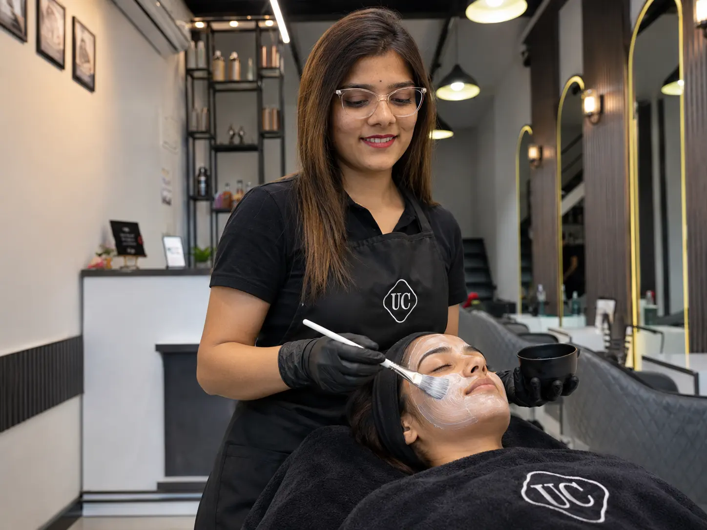

Premium Skin Care
Glowing, Healthy Skin at Urban Cuts Family Salon
From Korean facials and hydra radiance rituals to targeted D-Tan treatments, our skin care menu is built to suit every skin type and concern — delivered in a calm, luxury setting by trained skin specialists.

Service Overview
Skin Care Built Around Your Skin, Not a Trend
Every skin type has different needs — oily, dry, sensitive, sun-tanned or simply tired from a busy week. Our skin specialists start with a quick skin assessment so we can recommend the right facial or treatment rather than a one-size-fits-all package.
From quick 20-minute glow treatments to layered Korean facials with LED mask light therapy, and full D-Tan services for the face, back, hands, legs and tummy, our skin care menu covers everything from everyday upkeep to occasion-ready prep.
Our Skin Care Menu
Choose Your Skin Care Service
Grouped below for easy browsing — quick treatments, signature facials, and our full range of D-Tan services.
Quick & Everyday Treatments
-
URBAN Detox Cleanse
A deep-cleansing treatment that clears out impurities and refreshes tired skin.
-
Quick Glow Therapy
A fast, effective pick-me-up for instantly brighter, fresher-looking skin.
-
Skin Refresh Cleanup
A thorough cleanup to clear congestion and leave skin smooth and refreshed.
Signature Facials
-
Basic Korean Facial
A gentle, hydration-focused facial for a natural, dewy glow.
-
Korean Facial with Serums
Our Korean facial layered with targeted serums for deeper nourishment.
-
Korean Facial + LED Mask Light Therapy
Korean facial ritual finished with LED light therapy for enhanced results.
-
Hydra Radiance Ritual
An intensive hydration treatment that leaves skin plump, smooth and radiant.
-
Oil Balance Matte Therapy
Controls excess oil and shine while keeping oily and combination skin balanced.
-
Vitamin C + Radiance Renewal Facial
A brightening treatment that targets dullness and uneven tone with Vitamin C.
-
Bio Renewal Age Defying Treatment
A firming, renewing facial aimed at early signs of ageing.
-
Avocado & Oat Calming Facial
A soothing facial formulated for sensitive or easily irritated skin.
-
Citron & Seabuckthorn Mattifying Facial
A mattifying treatment that helps control shine on oily and combination skin.
D-Tan Treatments
-
D-Tan Face
Removes sun tan and evens out tone on the face.
-
D-Tan Upper Back
Targeted de-tanning for the upper back area.
-
D-Tan Full Back
Complete de-tanning coverage for the full back.
-
D-Tan Hands
Brightens and evens out tan lines on the hands.
-
D-Tan Half Legs
De-tanning treatment for the lower half of the legs.
-
D-Tan Full Legs
Complete de-tanning coverage for the full legs.
-
D-Tan Tummy
Targeted de-tanning and brightening for the tummy area.
The Benefits
Why Regular Skin Care Matters
-
Brighter, Even Skin Tone
Regular facials and D-Tan sessions keep skin tone even and radiant.
-
Treatments Matched to Your Skin
Every service is chosen based on your skin type and concerns.
-
Relaxing, Luxury Setting
A calm space designed to make skin care feel like self-care.
-
Hygienic, Trained Application
Sanitised tools and trained specialists at every step.
Who It's For
Who Is This Service For?
-
Dull or Tired Skin
Quick Glow Therapy or a Korean Facial for an instant, natural-looking lift.
-
Sun-Tanned Skin
D-Tan treatments for the face, back, hands, legs or tummy.
-
Oily or Combination Skin
Oil Balance Matte Therapy or the Citron & Seabuckthorn Mattifying Facial.
-
Sensitive or Early Ageing Skin
The Avocado & Oat Calming Facial or Bio Renewal Age Defying Treatment.
How It Works
Our Skin Care Process
-
01
Skin Assessment
We discuss your skin type, concerns and the result you're after.
-
02
Cleanse & Prep
Skin is cleansed and prepped to get the most from your treatment.
-
03
Treatment
Your chosen facial or D-Tan service, applied with premium products.
-
04
Massage & Mask
A relaxing massage and mask to boost circulation and absorption.
-
05
Finish & Aftercare
A finishing layer and simple aftercare tips to extend your results.
Trusted By Baner
Why Choose Urban Cuts Family Salon for Skin Care
- Skin specialists trained across facials, D-Tan & light therapy
- Treatments matched to your skin type after a quick assessment
- Premium, salon-grade skin care products
- Full D-Tan range for face, back, hands, legs & tummy
- Hygienic tools and single-use consumables at every station
- Consistently rated 5.0 across 141+ Google reviews
Have Questions?
Skin Care FAQs
What is a Korean Facial and how is it different from a regular facial?
A Korean Facial focuses on deep hydration, gentle exfoliation and layered serums for a natural, dewy glow, rather than harsh extraction. We offer it as a Basic version, with added serums, or with LED mask light therapy for extra results.
What is D-Tan treatment and how often should I get it done?
D-Tan treatments remove sun tan and even out skin tone on the face, back, hands, legs or tummy. Most clients book it every 3 to 4 weeks, or before a special occasion.
Which facial is best for oily or acne-prone skin?
Our Oil Balance Matte Therapy and Citron & Seabuckthorn Mattifying Facial are designed for oily and combination skin, helping control excess oil while keeping skin balanced.
Do you offer anti-ageing skin treatments?
Yes, our Bio Renewal Age Defying Treatment and Vitamin C + Radiance Renewal Facial are focused on firmness, brightness and reducing early signs of ageing.
Are these facials suitable for sensitive skin?
Yes, treatments like our Avocado & Oat Calming Facial are formulated specifically for sensitive or easily irritated skin. Let your stylist know about any sensitivities during consultation.
How long does a typical facial or D-Tan session take?
Quick treatments like Quick Glow Therapy take about 20 to 30 minutes, while full facials and D-Tan sessions typically take 45 to 75 minutes depending on the service.
Visit Us
Find Urban Cuts Family Salon in Baner
Shop 10, Nancy Hill View,Baner Annex, Baner,
Pune, Maharashtra 411045
Phone: 88620 70100
Business Hours
- Monday - Sunday10:00 AM - 9:30PM
Ready for Skin That Glows?
Book your skin care appointment today and experience Baner's most premium family salon.